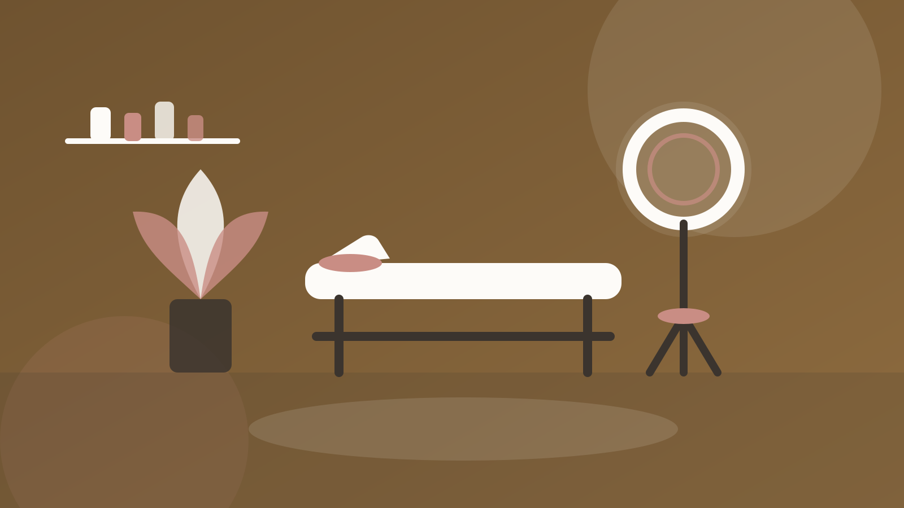
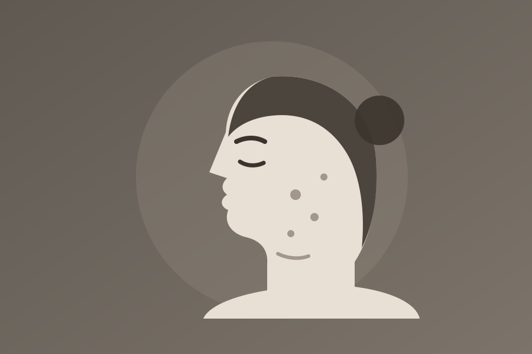
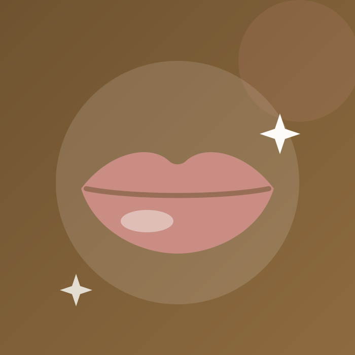
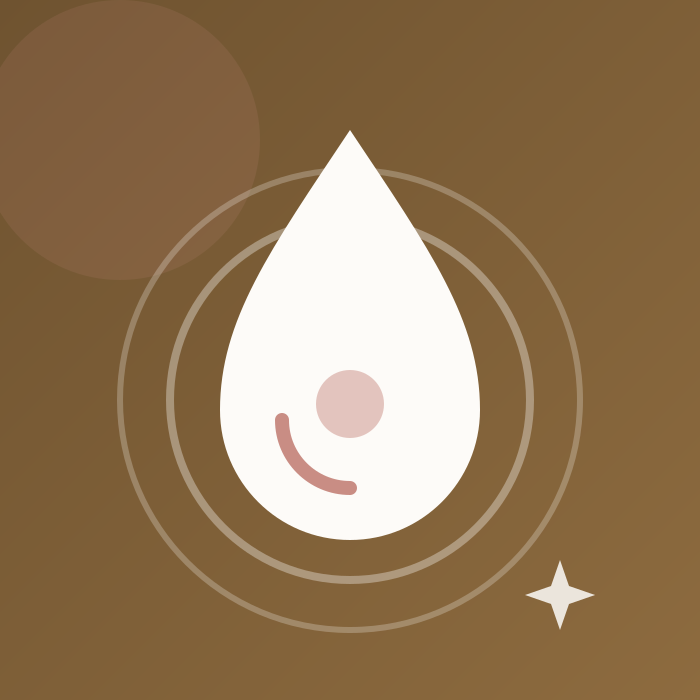
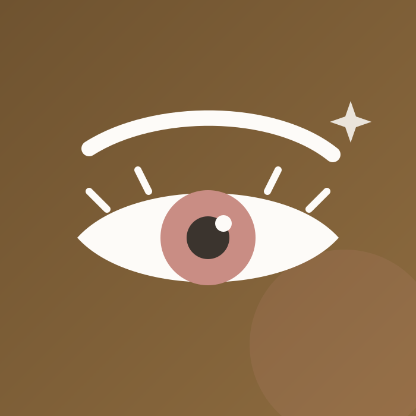
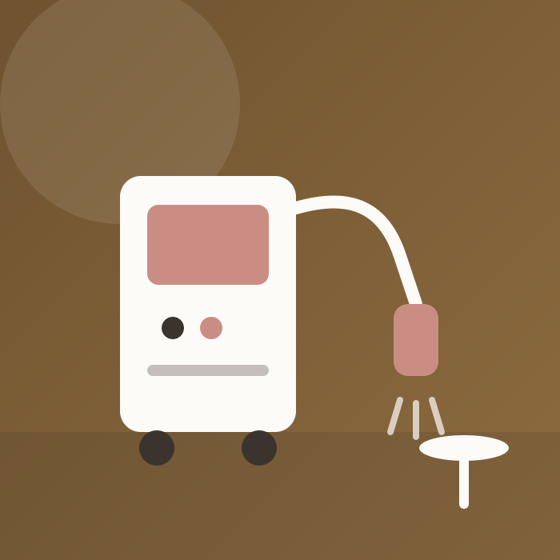
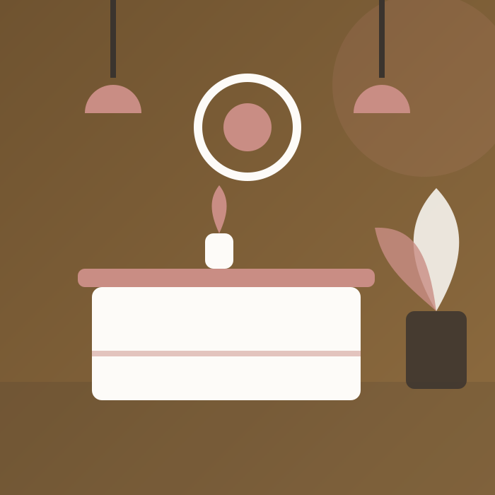

"Me daba pánico el bótox por miedo a quedarme sin expresión. La Dra. Herrera me puso microdosis y el resultado es justo lo que pedía: mi madre me dijo que se me veía descansada sin saber que me había hecho nada."
Bótox · Nervión

Medicina estética en Sevilla
Dirección médica colegiada, aparatología de última generación y un principio innegociable: nunca te recomendaremos un tratamiento que no necesites. Primera valoración gratuita.
Tratamientos
Precios "desde" por sesión o vial. En la valoración gratuita te damos presupuesto exacto y por escrito.
desde
29 €
Depilación láser de axilas por sesión. Piernas enteras desde 79 €. Equipo apto para pieles bronceadas.
Pedir citadesde
290 €
Labios, surcos y pómulos con vial completo de 1 ml. Marcas premium y retoque de revisión incluido a los 15 días.
Pedir citadesde
240 €
Tercio superior completo (frente, entrecejo y patas de gallo). Aplicado siempre por médico. Revisión a los 15 días incluida.
Pedir citadesde
75 €
Peeling médico despigmentante o antiacné según tu piel. Ideal en otoño e invierno para borrar manchas del verano.
Pedir citadesde
65 €
Efecto tensor y estímulo de colágeno sin agujas. Perfecta antes de un evento: sales con la piel luminosa el mismo día.
Pedir citadesde
90 €
Vitaminas y ácido hialurónico no reticulado para hidratación profunda. Recomendada en pack de 3 sesiones.
Pedir citaResultados reales
Fotos sin filtros ni retoques, con consentimiento de cada paciente. Desliza para comparar.

Perfilado de labios y surcos — 1 ml de ácido hialurónico, resultado a las 3 semanas.





Bonos y packs
Sin caducidad durante 12 meses y transferibles: si no lo terminas, puede usarlo quien tú quieras.
axilas + ingles brasileñas
330 €
Equivale a 55 € por sesión combinada. La zona más pedida por nuestras pacientes, con revisión de fototipo incluida.
Lo quieroel más reservado
390 €
3 radiofrecuencias + 2 mesoterapias + 1 peeling de luminosidad, planificadas en las 8 semanas previas al gran día. Valorado en 520 €.
Reservar pack4 higienes + 2 peelings
420 €
Tu piel cuidada todo el año con cita preferente. Incluye diagnóstico de piel computerizado cada trimestre.
Lo quieroAparatología
Renovamos los equipos cada 4 años y todos cuentan con marcado CE médico. Lo barato en estética sale caro.
755, 808 y 1064 nm en un solo cabezal: eficaz en vello fino y apto para pieles morenas y bronceadas, también en verano.
Sensor de temperatura en tiempo real que mantiene los 41-43 °C óptimos para estimular colágeno sin molestias.
Analizamos hidratación, manchas y arrugas antes de cada plan de tratamiento. Medimos el resultado, no lo suponemos.
Todos los inyectables los aplica la Dra. Lucía Herrera, colegiada nº 41/09214. Nunca delegamos medicina en manos no médicas.
Preguntas frecuentes
La mayoría son prácticamente indoloros. El láser se siente como un leve calor y en los inyectables usamos crema anestésica y agujas ultrafinas; la mayoría de pacientes lo describe como "un pellizquito". Si eres especialmente sensible, dínoslo y adaptamos el ritmo.
Depende del tratamiento y de tu piel. Como orientación: láser, entre 6 y 8 sesiones; radiofrecuencia, packs de 4 a 6; el bótox y el hialurónico son de sesión única con revisión a los 15 días. En la primera valoración te damos un plan con número de sesiones y precio total cerrado.
Sí, siempre. Incluye diagnóstico de piel computerizado y presupuesto por escrito, sin ningún compromiso. Si decides no hacerte nada, no pasa absolutamente nada.
Sí. Financiamos cualquier tratamiento o bono superior a 300 € hasta en 12 meses sin intereses, con aprobación en el momento. Solo necesitas tu DNI y una cuenta bancaria.
Con nuestro equipo de triple longitud de onda, sí: la longitud de 1064 nm es segura en pieles bronceadas. Solo pedimos evitar la exposición solar directa 48h antes y después de cada sesión.
Nuestra filosofía es el resultado natural: que te vean descansada, no distinta. Trabajamos con microdosis y preferimos citarte dos veces antes que pasarnos un milímetro.
Opiniones
4,9 sobre 5 en Google con más de 200 reseñas verificadas.
"Me daba pánico el bótox por miedo a quedarme sin expresión. La Dra. Herrera me puso microdosis y el resultado es justo lo que pedía: mi madre me dijo que se me veía descansada sin saber que me había hecho nada."
Bótox · Nervión
"Llevaba dos años con láser en otra clínica sin resultado en el vello fino. Aquí con la triple longitud de onda, en 4 sesiones se nota muchísimo. Además siempre te atiende la misma técnico, Marta, que es un encanto."
Láser diodo · Sevilla Este
"Contraté el pack de novia para mi boda de septiembre y fue la mejor decisión de todos los preparativos. En las fotos la piel se ve espectacular. Me planificaron las sesiones alrededor de las pruebas del vestido."
Pack Novia · Los Remedios
"Fui a la valoración gratuita convencida de que necesitaba hialurónico y la doctora me dijo que aún no me hacía falta, que empezara por mesoterapia. La mitad de precio. Esa honestidad no se encuentra fácil."
Mesoterapia · Centro
Pide tu cita
Déjanos tus datos y te llamamos hoy mismo si escribes antes de las 19:00. Sin listas de espera: cita en menos de 5 días.
Dónde estamos
Avenida de la Buhaira 12, local 3 — a 4 minutos del metro Nervión. Parking público San Francisco Javier a 150 m.